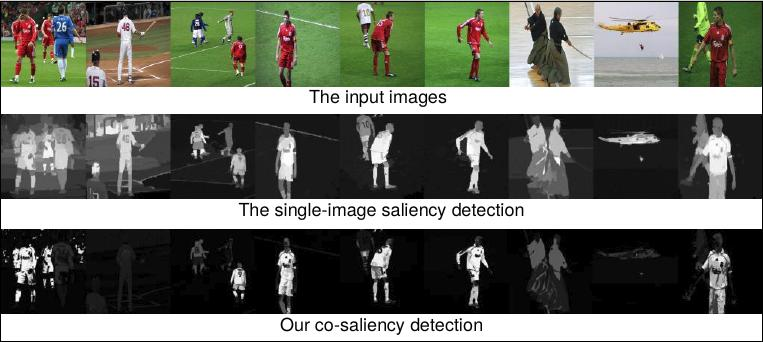

Co-saliency Detection

Co-saliency detection is used to discover the common saliency on the multiple images. This page provides a
paper list of the co-saliency detection. If you have paper to recommend or any suggestions, please feel free to
contact me.
This page will not be maintenance any more. A very nice co-saliency dataset and benchmark could be found in "Taking a Deeper Look at the Co-salient Object Detection" [Project].
Survey papers:
-
Deng-Ping Fan, Zheng Lin, Ge-Peng Ji, Dingwen Zhang, Huazhu Fu, Ming-Ming Cheng,
"Taking a Deeper Look at the Co-salient Object Detection",
in IEEE Conference on Computer Vision and Pattern Recognition (CVPR), 2020.
[Paper] [Project] (The largest co-saliency detection dataset and benchmark!)
- Dingwen Zhang, Huazhu Fu, Junwei Han, Ali Borji, Xuelong Li, "A Review of Co-saliency Detection
Algorithms: Fundamentals, Applications, and Challenges",
ACM Transactions on Intelligent Systems and Technology (TIST), vol. 9, no. 4, pp. 1-31, 2018.
[PDF]
- Runmin Cong, Jianjun Lei, Huazhu Fu, Ming-Ming Cheng, Weisi Lin, Qingming Huang, "Review of visual
saliency detection with comprehensive information",
IEEE Transactions on Circuits and Systems for Video Technology (TCSVT), 2018.
[PDF]
Paper list:
- D. Jacobs, D. Goldman, and E. Shechtman, “Cosaliency: Where people look when comparing images,” in
Proc. ACM Symp. User Inter. Softw. Technol. (UIST), 2010, pp. 219–228. [Link]
- Hwann-Tzong Chen, “Preattentive co-saliency detection,” in Proc. IEEE Conf. Image Process. (ICIP),
2010, pp. 1117–1120. [Link]
[Code] [Project]
- Kai-Yueh Chang, Tyng-Luh Liu, and Shang-Hong Lai, “From co-saliency to co-segmentation: An efficient and
fully unsupervised energy minimization model,” in CVPR, 2011, pp. 2129–2136. [Link]
- Hongliang Li and King N. Ngan, “A Co-saliency Model of Image Pairs,” IEEE Transactions on Image
Processing (TIP), vol. 20, no. 12, pp. 3365–3375, 2011. [Link] [Code] [Dataset] [Project]
- Huazhu Fu, Xiaochun Cao, and Zhuowen Tu, "Cluster-based Co-saliency Detection", IEEE Transactions on
Image Processing (TIP), vol. 22, no. 10, pp. 3766-3778, 2013. [Link] [Code]
- Xiaochun Cao, Zhiqiang Tao, Bao Zhang, Huazhu Fu, Xuewei Li, "Saliency map fusion based on rank-one
constraint", in IEEE International Conference on Multimedia and Expo (ICME), 2013, pp. 1-6. [Link] [[Code]
- Hongliang Li, Fanman Meng, and King N. Ngan, "Co-Salient Object Detection From Multiple Images",
IEEE Transactions on Multimedia (TMM), vol. 15, no. 8, pp. 1896-1909, 2013. [Link] [Project]
- Zhiyu Tan, Liang Wan, Wei Feng, and Chi-Man Pun, "Image co-saliency detection by propagating superpixel
affinities," IEEE International Conference on Acoustics, Speech and Signal Processing (ICASSP), 2013,
pp.2114-2118. [Link]
- Xiaochun Cao, Zhiqiang Tao, Bao Zhang, Huazhu Fu, and Wei Feng, "Self-adaptively Weighted Co-saliency
Detection via Rank Constraint", IEEE Transactions on Image Processing (TIP), vol. 23, no. 9, pp.
4175-4186, 2014. [Link] [Code]
- Xiaochun Cao, Yupeng Cheng, Zhiqiang Tao, and Huazhu Fu, "Co-saliency Detection via Base
Reconstruction", in ACM Multimedia (ACM MM), 2014. [Link]
- Lina Li, Zhi Liu, Wenbin Zou, Xiang Zhang, and Olivier Le Meur, "Co-saliency detection based on
region-level fusion and pixel-level refinement", in International Conference on Multimedia Expo (ICME),
Chengdu, July 2014. [Link]
- Zhi Liu, Wenbin Zou, Lina Li, Liquan Shen, and Olivier Le Meur, "Co-Saliency Detection Based on
Hierarchical Segmentation," IEEE Signal Processing Letters (SPL), vol. 21, no. 1, pp. 88-92, 2014. [Link]
- Yi-Lei Chen and Chiou-Ting Hsu, "Implicit Rank-Sparsity Decomposition: Applications to
Saliency/Co-Saliency Detection," in Proc. ICPR, Stockholm, Sweden, Aug. 2014. [Link] [Project]
- YiJun Li, Keren Fu, Zhi Liu, Jie Yang, "Efficient Saliency-Model-Guided Visual Co-Saliency
Detection," IEEE Signal Processing Letters (SPL), vol. 22, no. 5, pp. 588-592, 2015. [Link]
- Dingwen Zhang, Junwei Han, Chao Li, Jingdong Wang, "Co-Saliency Detection via Looking Deep and
Wide", in CVPR, 2015. [Link]
- L. Ye, Z. Liu, J. Li, W. Zhao, L. Shen, "Co-Saliency Detection via Co-Salient Object Discovery and
Recovery," IEEE Signal Processing Letters, vol.22, no.11, pp.2073-2077, 2015. [Link], [Project]
- Dingwen Zhang, Deyu Meng, Chao Li, Lu Jiang, Qian Zhao, Junwei Han, "A Self-paced Multiple-instance
Learning Framework for Co-saliency Detection", in ICCV, 2015. [Link]
- D. Zhang, J. Han, J. Han, L. Shao., "Cosaliency Detection Based on Intrasaliency Prior Transfer and Deep
Intersaliency Mining", IEEE Trans. on Neural Networks and Learning Systems, 2015. [Link]
- Shuze Du and Shifeng Chen, "Detecting Co-Salient Objects in Large Image Sets," IEEE Signal
Processing Letters, vol.22, no.2, pp.145-148, Feb. 2015. [Link]
- Shen Ningmin and Li Jing, "Improved structured sparse PCA for cluster-based co-saliency detection",
In Proceedings of International Conference on Internet Multimedia Computing and Service (ICIMCS '15), 2015.
[Link]
- Huiyun Jing, Xin He, Qi Han, Xiamu Niu, "Co-saliency Detection Linearly Combining Single-View Saliency
and Foreground Correspondence", IEICE Transactions on Information and Systems, 98-D(4): 985-988, 2015.
[Link]
- Rui Huang, Wei Feng, Jizhou Sun, "Saliency and co-saliency detection by low-rank multiscale fusion,"
in IEEE International Conference on Multimedia and Expo (ICME), 2015. [Link]
- Hao Chen, Panbing Wang, Ming Liu, "From Co-saliency Detection to Object Co-segmentation: A unified
Multi-stage Low-rank Matrix Recovery Approach", in Proceedings of the IEEE International Conference on
Robotics and Biomimetics, ROBIO 2015. [Link]
- C. Ge, K. Fu, Y. Li, J. Yang, P. Shi and L. Bai, "Co-saliency detection via similarity-based saliency
propagation," in IEEE International Conference on Image Processing (ICIP), 2015, pp. 1845-1849. [Link]
- Koteswar Rao Jerripothula, Jianfei Cai, and Junsong Yuan, "QCCE: Quality Constrained Co-saliency
Estimation for Common Object Detection", in IEEE International Conference on Visual Communications and
Image Processing (VCIP), 2016. [Link] [Code]
- Chenjie Ge, Keren Fu, Fanghui Liu, Li Bai, Jie Yang, "Co-saliency detection via inter and intra saliency
propagation", Signal Processing: Image Communication, 2016. [Link]
- Shen, Ning-Min and Li, Jing and Zhou, Pei-Yun and Huo, Ying and Zhuang, Yi, "BSFCoS: Block and Sparse
Principal Component Analysis-Based Fast Co-Saliency Detection Method", in International Journal of
Pattern Recognition and Artificial Intelligence, vol. 30, no. 1, 2016. [Link]
- Dingwen Zhang, Junwei Han, Chao Li, Jingdong Wang, Xuelong Li, "Detection of Co-salient Objects by
Looking Deep and Wide", International Journal of Computer Vision 2016. [Link]
- Koteswar Rao Jerripothula, Jianfei Cai, and Junsong Yuan, "CATS: Co-saliency Activated Tracklet
Selection for Video Co-localization", in ECCV, 2016. [Link]
- H. Song, Z. Liu, Y. Xie, L. Wu and M. Huang, "RGBD Co-saliency Detection via Bagging-Based
Clustering," IEEE Signal Processing Letters, vol. 23, no. 12, pp. 1722-1726, Dec. 2016. [Link]
- Yufeng Xie, Linwei Ye, Zhi Liu, Xuemei Zou, "Video co-saliency detection", in Proc. SPIE 10033,
Eighth International Conference on Digital Image Processing (ICDIP), 2016. [Link]
- Dingwen Zhang, Deyu Meng, Junwei Han, "Co-saliency Detection via A Self-paced Multiple-instance Learning
Framework", IEEE Transactions on Pattern Analysis and Machine Intelligence, 2016. [Link]
- Rui Huang, Wei Feng, Jizhou Sun, "Color Feature Reinforcement for Co-Saliency Detection without Single
Saliency Residuals", IEEE Signal Processing Letters, 2017. [Link]
- Xiwen Yao, Junwei Han, Dingwen Zhang, Feiping Nie, "Revisiting Co-Saliency Detection: A Novel Approach
based on Two-stage Multi-view Spectral Rotation Co-clustering". in IEEE Transactions on Image
Processing, 2017. [Link]
- Wenguan Wang, Jianbing Shen, Hanqiu Sun, Ling Shao, "Video Co-saliency Guided Co-segmentation". IEEE
Transactions on Circuits and Systems for Video Technology, 2017. [Link]
- Xing Sun, Lihe Zhang, Huchuan Lu, "Co-saliency detection via partially absorbing random walk". in
International Conference on Information Science and Technology (ICIST), 2017. [Link]
- Junwei Han, Gong Cheng, Zhenpeng Li, Dingwen Zhang, "A Unified Metric Learning-Based Framework for
Co-saliency Detection". IEEE Transactions on Circuits and Systems for Video Technology, 2017. [Link]
- Lina Wei, Shanshan Zhao, Omar El Farouk Bourahla, Xi Li, Fei Wu, "Group-wise Deep Co-saliency
Detection". in IJCAI, 2017. [Link]
- Zhaofeng Zhang; Zemin Wu; Qingzhu Jiang; Lin Du; Lei Hu, "Co-saliency Detection Based on Superpixel
Matching and Cellular Automata". KSII Transactions on Internet and Information Systems, vol. 11, no. 5,
pp. 2576-2589, 2017. [Link]
- Guiqian Zhu, Yi Ji, Xianjin Jiang, Zenan Xu, Chunping Liu, "Co-saliency Detection Based on Superpixel
Clustering", Knowledge Science, Engineering and Management, pp 287-295, 2017. [Link]
- Jing Lou, Fenglei Xu, Qingyuan Xia, Wankou Yang, Mingwu Ren, "Hierarchical Co-salient Object Detection
via Color Names", in Proceedings of the Asian Conference on Pattern Recognition (ACPR), pp. 1–7, 2017.
[Link]
- Zuyi Wang, Lihe Zhang, "Two-Stage Co-Salient Object Detection", in 10th International Conference on
Intelligent Computation Technology and Automation (ICICTA), 2017. [Link]
- Chung-Chi Tsai, Xiaoning Qian, Yen-Yu Lin, "Segmentation guided local proposal fusion for co-saliency
detection", in Multimedia and Expo (ICME), 2017 IEEE International Conference on, 2017. [Link] [Code]
- Bo Li, Zhengxing Sun, Jiagao Hu, Junfeng Xu, "Co-saliency Detection via Sparse Reconstruction and
Co-salient Object Discovery", in PCM, (2), 2017, pp: 222-232. [Link]
- Zhengchao Lei, Weiyan Chai, Sanyuan Zhao, Hongmei Song, Fengxia Li, "Co-saliency Detection Based on
Siamese Network", in Mobile Ad-hoc and Sensor Networks. MSN 2017. Communications in Computer and
Information Science, vol 747, 2017, pp: 99-109. [Link]
- Runmin Cong, Jianjun Lei, Huazhu Fu, Qingming Huang, Xiaochun Cao, Chunping Hou, "Co-saliency Detection
for RGBD Images Based on Multi-constraint Feature Matching and Cross Label Propagation", IEEE
Transactions on Image Processing, 2018. [Link]
- Dong-ju Jeong, Insung Hwang, Nam Ik Cho, "Co-salient Object Detection Based on Deep Saliency Networks
and Seed Propagation over an Integrated Graph", in IEEE Transactions on Image Processing, 2018. [Link]
- Runmin Cong, Jianjun Lei, Huazhu Fu, Weisi Lin, Qingming Huang, Xiaochun Cao, Chunping Hou, "An
Iterative Co-Saliency Framework for RGBD Images", IEEE Transactions on Cybernetics, 2018. [Link]
- Honglin Quan, Songhe Feng, Baifan Chen, "Two Birds with One Stone: A Unified Approach to Saliency and
Co-Saliency Detection via Multi-Instance Learning" IEEE Access, 2018. [Link]
- Hongkai Yu, Kang Zheng, Jianwu Fang, Hao Guo, Wei Feng, Song Wang, "Co-Saliency Detection within a
Single Image", in AAAI, 2018. [Link]
- Lishan Wu, Zhi Liu, Hangke Song, Olivier Le Meur, "RGBD co-saliency detection via multiple kernel
boosting and fusion", Multimedia Tools and Applications, 2018. [Link]
- Koteswar Rao Jerripothula, Jianfei Cai, Junsong Yuan, "Quality-guided Fusion-based Co-saliency
Estimation for Image Co-segmentation and Co-localization", IEEE Transactions on Multimedia, 2018. [Link]
- C. Tsai, W. Li, K. Hsu, X. Qian and Y. Lin, "Image Co-saliency Detection and Co-segmentation via
Progressive Joint Optimization", IEEE Transactions on Image Processing, 2018. [Link]
- KJ Hsu, CC Tsai, YY Lin, X Qian, YY Chuang, "Unsupervised CNN-based Co-Saliency Detection with Graphical
Optimization", in ECCV, 2018. [Link]
- M. Li, S. Dong, K. Zhang, Z. Gao, X. Wu, H. Zhang, G. Yang, S. Li, "Deep Learning intra-image and
inter-images features for Co-saliency detection", in BMVC, 2018. [Link]
- X. Zheng, Z. Zha, L. Zhuang, "A Feature-Adaptive Semi-Supervised Framework for Co-saliency
Detection", in ACM MM, 2018. [Link]
- Zhengyi Liu, Song Shi, Quntao Duan, "Co-saliency detection via cluster-based structured matrix
decomposition," in Tenth International Conference on Graphic and Image Processing (ICGIP 2018). 2018.
[Link]
- Tengpeng Li, Huihui Song, Kaihua Zhang, Qingshan Liu, Wei Lian, "Low-rank weighted co-saliency detection
via efficient manifold ranking", Multimedia Tools and Applications, 2019. [Link]
- Chong Wang, Zheng-Jun Zha, Dong Liu, Hongtao Xie, "Robust Deep Co-saliency Detection with Group
Semantic", in AAAI, 2019. [Link]
- Kuang-Jui Hsu, Yen-Yu Lin, DYung-Yu Chuang, "DeepCO^3: Deep Instance Co-segmentation by Co-peak Search
and Co-saliency Detection", in CVPR, 2019. [Link]
- Kaihua Zhang; Tengpeng Li; Bo Liu; Qingshan Liu, "Co-saliency Detection via Mask-guided Fully
Convolutional Networks with Multi-scale Label Smoothing", in CVPR, 2019. [Link]
- Zun Li, Congyan Lang, Jiashi Feng, Yidong Li, Tao Wang, and Songhe Feng, "Co-saliency Detection with
Graph Matching", ACM Trans. Intell. Syst. Technol., 2019. [Link]
- L. Wei, S. Zhao, O. E. F. Bourahla, X. Li, F. Wu and Y. Zhuang, "Deep Group-wise Fully Convolutional
Network for Co-saliency Detection with Graph Propagation," in IEEE Transactions on Image Processing.
2019. [Link]
- Shaoyue Song, Hongkai Yu, Zhenjiang Miao, Dazhou Guo, Wei Ke, Cong Ma, Song Wang, "An Easy-to-hard
Learning Strategy for Within-image Co-Saliency Detection," in Neurocomputing, 2019. [Link]
- Aditya Kompella, Raghavendra V. Kulkarni, "Weakly supervised multi-scale recurrent convolutional neural
network for co-saliency detection and co-segmentation," in Neural Computing and Applications, 2019. [Link]
- Bo Jiang, Xingyue Jiang, Jin Tang, Bin Luo, Shilei Huang, "Multiple Graph Convolutional Networks for
Co-Saliency Detection," in IEEE International Conference on Multimedia and Expo (ICME), 2019. [Link]
- Chung-Chi Tsai, Kuang-Jui Hsu, Yen-Yu Lin, Xiaoning Qian, Yung-Yu Chuang, "Deep Co-saliency Detection
via Stacked Autoencoder-enabled Fusion and Self-trained CNNs," IEEE Transactions on Multimedia, 2019.
[Link]
- Bo Li, Zhengxing Sun, Lv Tang, Yunhan Sun and Jinlong Shi, "Detecting Robust Co-Saliency with Recurrent
Co-Attention Neural Network," in International Joint Conference on Artificial Intelligence (IJCAI),
2019. [Link]
- Jingru Ren, Zhi Liu, Xiaofei Zhou, Cong Bai, Guangling Sun, "Co-saliency Detection via Integration of
Multi-layer Convolutional Features and Inter-image Propagation," Neurocomputing, 2019. [Link]
- Rui Huang, Wei Feng, Zezheng Wang, Yan Xing, Yaobin Zou, "Exemplar-based Image Saliency and Co-saliency
Detection," Neurocomputing, 2019. [Link]
- Bo Jiang, Xingyue Jiang, Ajian Zhou, Jin Tang, and Bin Luo, "A Unified Multiple Graph Learning and
Convolutional Network Model for Co-saliency Estimation," ACM MM, 2019. [Link]
- Yuanhao Yue, Qin Zou, Hongkai Yu, Qian Wang, Song Wang, "An End-to-End Network for Co-Saliency Detection
in One Single Image," ArXiv, 2019. [Link]
- Sayanti Bardhan, Shibu Jacob, "Cosaliency Detection in Images Using Structured Matrix Decomposition and
Objectness Prior," in International Conference on Computer Vision and Image Processing, 2019. [Link]
- Sayanti Bardhan, Shibu Jacob, "Cosaliency Detection in Images Using Structured Matrix Decomposition and
Objectness Prior," in International Conference on Computer Vision and Image Processing, 2019. [Link]
- Zheng-Jun Zha, Chong Wang, Dong Liu, Hongtao Xie, Yongdong Zhang, "Robust Deep Co-Saliency Detection With Group Semantic and Pyramid Attention," in IEEE Transactions on Neural Networks and Learning
Systems, 2020. [Link]
- Rui Huang, Wei Feng, Jizhou Sun, Yaobin Zou, "Image saliency and co-saliency detection by low-rank multiscale fusion," in International Journal of High Performance Systems Architecture, 2020. [Link]
- Kaihua Zhang, Tengpeng Li, Shiwen Shen, Bo Liu, Jin Chen, Qingshan Liu, "Adaptive Graph Convolutional Network with Attention Graph Clustering for Co-saliency Detection," in CVPR, 2020. [Link]
- Hongbo Bi, Kang Wang, Di Lu, Chenlei Wu, Wei Wang, Lina Yang, "C^2Net: a complementary co-saliency detection network," The Visual Computer, 2020. [Link]
- Zhao Zhang, Wenda Jin, Jun Xu, Ming-Ming Cheng, "Gradient-Induced Co-Saliency Detection," arXiv, 2020. [Link]
- Guangshuai Gao, Wenting Zhao, Qingjie Liu, Yunhong Wang, "Co-Saliency Detection with Co-Attention Fully Convolutional Network," in IEEE Transactions on Circuits and Systems for Video Technology, 2020. [Link]
- Jingru Ren, Zhi Liu, Gongyang Li, Xiaofei Zhou, Cong Bai, Guangling Sun, "Co-Saliency Detection Using Collaborative Feature Extraction And High-To-Low Feature Integration," in IEEE International Conference on Multimedia and Expo (ICME), 2020. [Link]
- Zhao Zhang, Wenda Jin, Jun Xu, Ming-Ming Cheng, "Gradient-Induced Co-Saliency Detection," in ECCV, 2020. [Link]
- Guangshuai Gao, Wenting Zhao, Qingjie Liu, Yunhong Wang, "Co-Saliency Detection with Co-Attention Fully Convolutional Network," arXiv, 2020.
[Link]
- Bo Jiang, Xingyue Jiang, Jin Tang, Bin Luo, "Co-saliency Detection via a General Optimization Model and Adaptive Graph Learning," IEEE Transactions on Multimedia, 2020.
[Link]
- Wen-Da Jin, Jun Xu, Ming-Ming Cheng, Yi Zhang, Wei Guo, "ICNet: Intra-saliency Correlation Network for Co-Saliency Detection," NeurIPS, 2020.
[Link]
- Qijian Zhang, Runmin Cong, Junhui Hou, Chongyi Li, Yao Zhao, "CoADNet: Collaborative Aggregation-and-Distribution Networks for Co-Salient Object Detection," NeurIPS, 2020.
[Link]
- H. Yu, K. Zheng, J. Fang, H. Guo and S. Wang, "A New Method and Benchmark for Detecting Co-Saliency Within a Single Image," in IEEE Transactions on Multimedia, vol. 22, no. 12, pp. 3051-3063, Dec. 2020.
[Link]